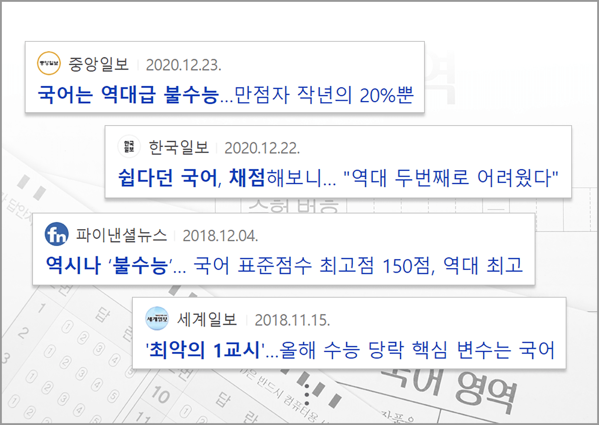
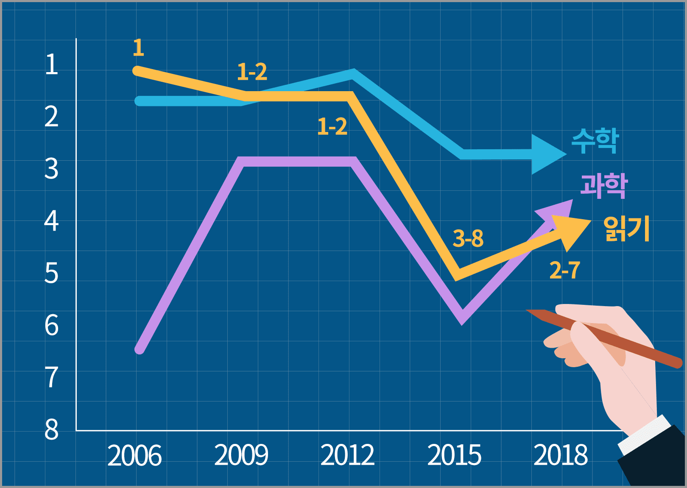
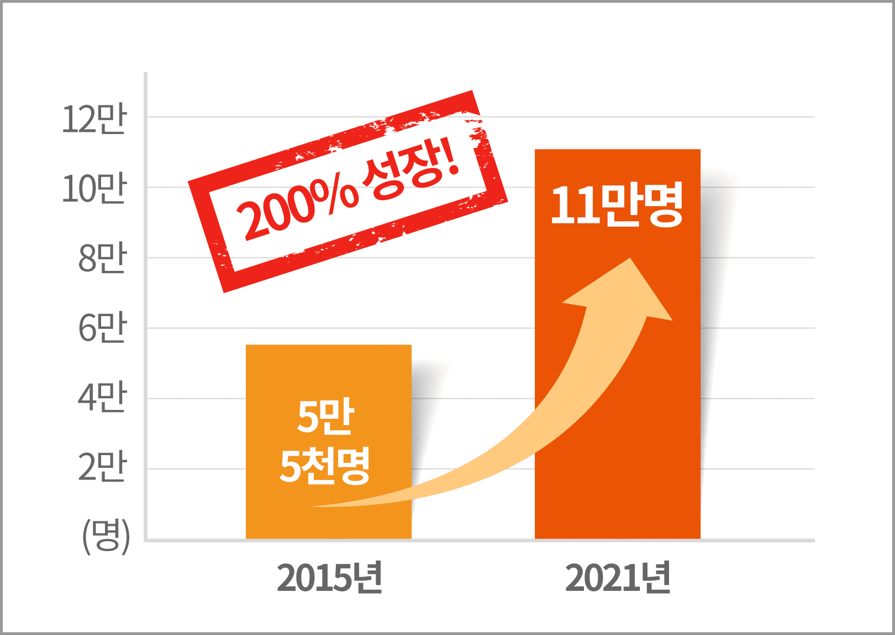
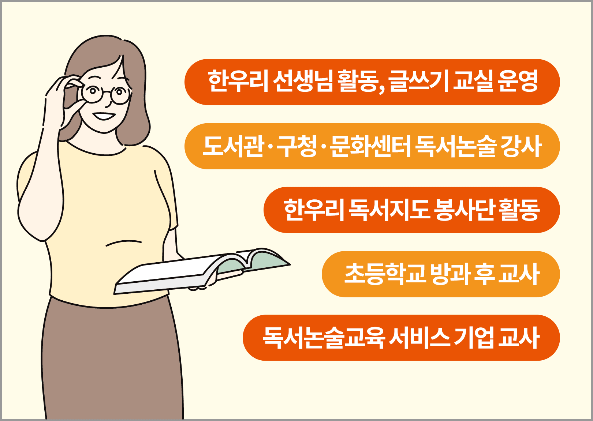

독서지도사란?
아이들 특성에 맞춘 듣기, 말하기, 읽기, 생각하기 지도를 통해
사고력, 창의력, 독해력, 표현 능력을 키워주는 교사입니다.
독서지도사는 고용노동부와 한국고용정보원에서 여성 재취업이 용이한 직업으로 선정되었습니다.
독서지도사를 선택해야 하는 이유
인생의 새로운 시즌을
맞이할 수 있습니다
수많은 고민에 둘러쌓인 지금 당신에게
독서지도사들의 이야기를 들려 드립니다
-
20년 후의 내 모습이 기대되는
나는 한우리 독서지도사입니다제주지부 이경아 독서지도사
3년 전만 해도 출구가 없어 보이는 육아 지옥 에 허덕이며 교사가 될 상상조차 못하던 평범 한 주부였어요. 어느 날 ‘한우리 지도교사 양 성반’ 모집 소식을 들은 순간 느꼈어요. ‘왔구나, 내 인생의 터닝 포인트!’
지금은 회원 수 45명의 3년 차 선임이자 멘토 교사가 되어 강의도 여러 번 하고, 수강생들에게 그림책 읽기 강의도 진행했어요. 그런 용기가 어 디서 나왔을까요? 그것은 절실함이었어요. 이젠 독서지도사를 넘어서 ‘전문강사’로 서는 것이 제 꿈이 되어 버렸습니다. -
평범한 엄마에서 선생님이 된 후
제가 그리는 미래가 달라졌어요전주완산지부 문보라 독서지도사
이야기만큼 매력적인 놀잇감이 또 있을까요? 남매가 놀아달라고 조를 때, 저는 책을 펼쳤어 요. 책을 보며 아이들이 무슨 생각을 하는지 궁금했지만 발문이 서툴러 대답은 짧았고 감 상을 길어 올리는 과정은 쉽지 않았지요.
아이들에게 친구들과 독서의 감상과 깨달음을 나누는 시간이야말로 어떤 공부보다 유익할 거라는 확신이 들었어요. 그러자 제가 그리는 미 래도 달라졌습니다. 아이들 사이에서 책과 함께 눈을 맞추는 한 사람. 그 역할이 독서지도사라는 걸 알았을 때, 망설임 없이 한우리 독서지도사 양성과정을 선택했어요. -
경력 단절 여성의 고민, 내 아이도
챙기면서 일을 할 수는 없을까?서초남지부 유은혜 독서지도사
경력 단절 여성이라는 말 자체가 거북합니다. 아이 둘을 키우며 자의 반 타의 반으로 경력이 끊겼지만 이대로 세상과 단절된 채 살고 싶지 는 않았어요. 전업맘도 워킹맘도 모두 행복하 지 않은 현실 속에서 자신의 정체성을 찾으려 고민의 시간을 보냅니다. 답답한 상황에 한우리 독서지도사를 알게 되 고 온라인 수강을 하게 되었어요.
초보 시절을 버티고 한우리 독서지도사 7년차인 지금, 많은 것이 변화되 었어요. 엄마도 자신의 일과 시간이 절대적으로 필요해요. 좋아하는 일 을 하며 경제적인 여유와 자녀 교육에도 도움이 되는 독서지도사라는 직업에 자부심을 느낍니다. -
잠자고 있는 자격증을 깨워서
용기를 내면 기회가 찾아옵니다일산동구지부 송선희 독서지도사
딸 학부모 모임에서 논술이 중요하다며 한우 리와 수학만 시키고 있다는 이야기를 듣는 순 간, 서랍 속에서 자고 있는 한우리 독서지도사 자격증이 생각났고 독서지도사 활동에 다시 도전해 보자고 결심했어요.
소심해서 시작하기까지가 어려운 사람이라 안 될 것 같은 이유, 부정적 인 이유만 찾다가 시작하지 않으면 기회도 없다는 생각에 용기를 냈어요. 막상 결정을 하고 나니 보수교육과 입문교육을 마치고 교사로 활동하기 까지의 과정들이 순식간에 이루어졌어요. 왜 그렇게 걱정하며 시작을 어려워했는지 무색할 정도였어요.
한우리와 함께라면 당신의 앞날은
더욱 빛날 것입니다
독해력이 강조되는 교육 동향이기에
독서지도사는 지금보다 더욱 유망한 직업입니다
-
불타는 수능 국어
출처 : 네이버 뉴스
-
읽기 능력 하락세
OECD 학업성취도(PISA) 최고-최하 순위 (데이터 출처 : e - 나라지표)
-
그렇기에, 독서 교육은 선택 아닌 필수
자격취득 후 다양한 분야에서 활동 가능
-
자격취득 후 다양한 분야에서 활동 가능

더욱 궁금한
독서지도사 이야기
출처 : 유튜브 채널 <책생글>
독서지도사가 된 당신의 내일,
기대해도 좋습니다!